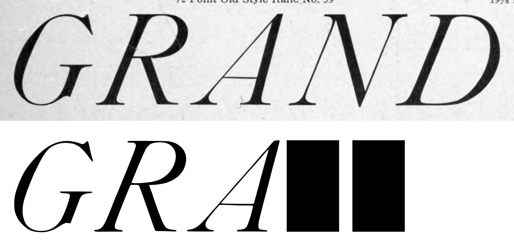
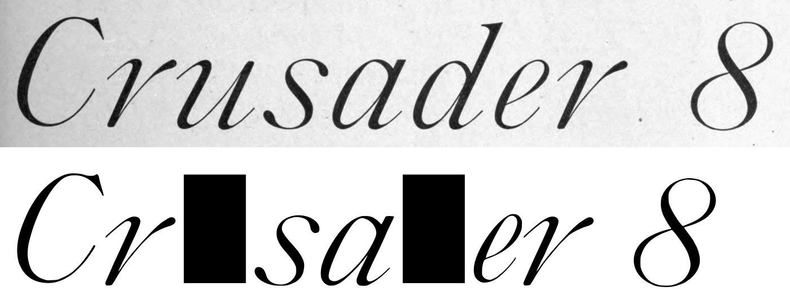
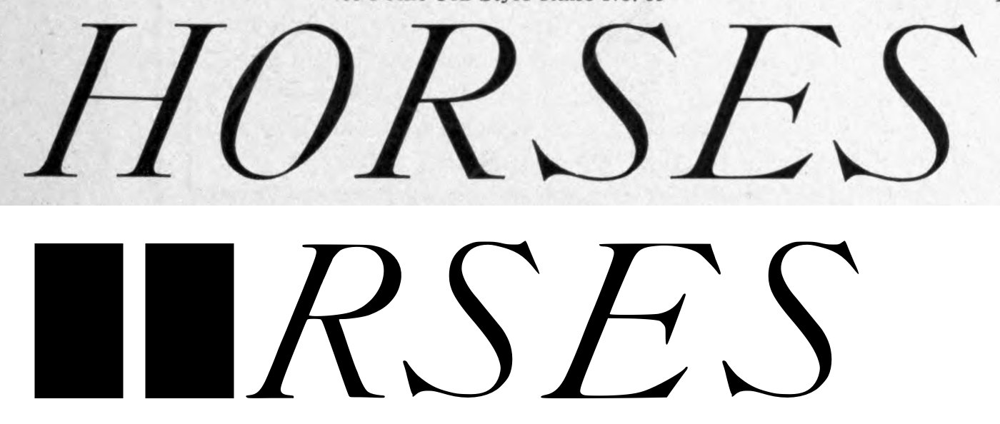
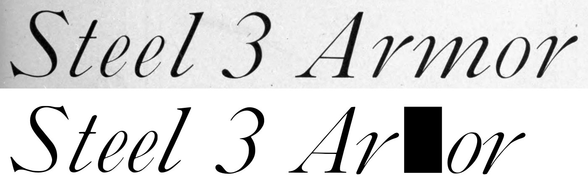
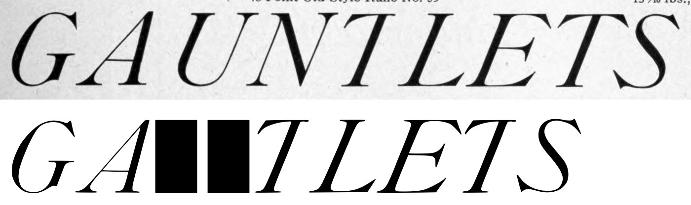
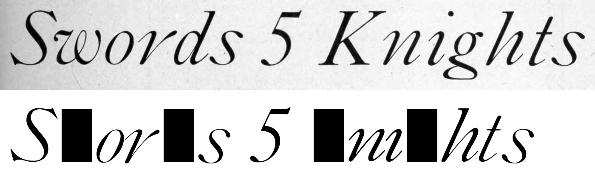
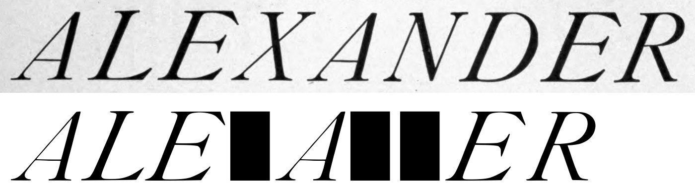
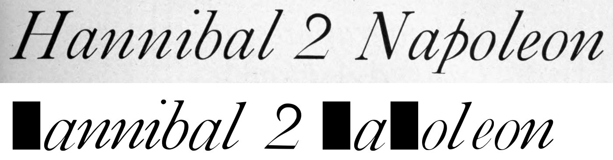
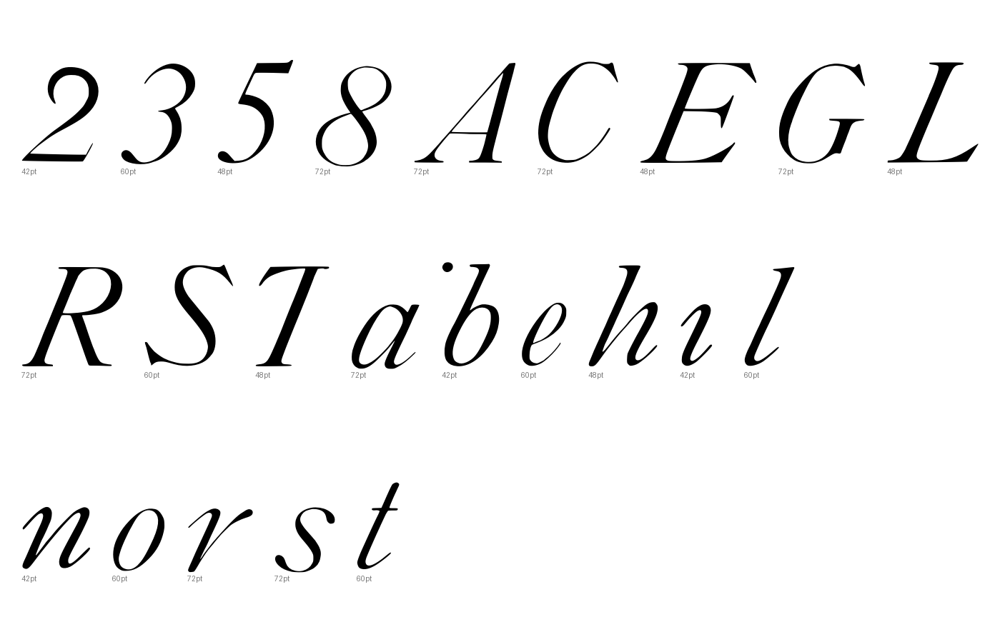
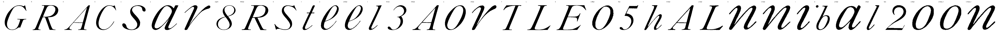

Gray letters are constructed, not traced.


0 warnings, 1 notes.
[
{
"level": "info",
"check": "specks",
"glyph": "R.60pt",
"value": 1,
"note": "marks beside the letter were recorded, not cut"
}
]
{
"133:72pt": {
"n_caps": 4,
"cap_height_px": 310.0,
"cap_source": "caps",
"baseline_px": 3011,
"baselines": {
"8": 3011,
"9": 3403
},
"glyphs": [
"G",
"R",
"A",
"C",
"s",
"a",
"r",
"eight"
],
"x_height_px": 200,
"figure_height_px": 312,
"stem_px": 10.5,
"scale": 2.25806,
"stem_units": 23.7,
"x_height": 452,
"figure_height": 705
},
"133:60pt": {
"n_caps": 3,
"cap_height_px": 255,
"cap_source": "caps",
"baseline_px": 2188,
"baselines": {
"6": 2188,
"7": 2519.5
},
"glyphs": [
"R.60pt",
"S",
"t",
"e",
"e.60pt",
"l",
"three",
"A.60pt",
"o",
"r.60pt"
],
"x_height_px": 162.5,
"figure_height_px": 257,
"stem_px": 13,
"scale": 2.7451,
"stem_units": 35.7,
"x_height": 446,
"figure_height": 705
},
"133:48pt": {
"n_caps": 3,
"cap_height_px": 204,
"cap_source": "caps",
"baseline_px": 1501,
"baselines": {
"4": 1501,
"5": 1768
},
"glyphs": [
"T",
"L",
"E",
"o.48pt",
"five",
"h"
],
"x_height_px": 167.5,
"figure_height_px": 211,
"stem_px": 24,
"scale": 3.43137,
"stem_units": 82.4,
"x_height": 575,
"figure_height": 724
},
"133:42pt": {
"n_caps": 2,
"cap_height_px": 178.5,
"cap_source": "caps",
"baseline_px": 901.0,
"baselines": {
"2": 901.0,
"3": 1147.0
},
"glyphs": [
"A.42pt",
"L.42pt",
"n",
"n.42pt",
"i",
"b",
"a.42pt",
"l.42pt",
"two",
"o.42pt",
"o.42pt_2",
"n.42pt_2"
],
"x_height_px": 112,
"figure_height_px": 169,
"stem_px": 14.0,
"scale": 3.92157,
"stem_units": 54.9,
"x_height": 439,
"figure_height": 663
}
}
{
"archive_id": "bookoftypespecim00barnrich",
"title": "Book of type specimens. Comprising a large variety of superior copper-mixed types, rules, borders, galleys, printing presses, electric-welded chases, paper and card cutters, wood goods, book binding machinery etc., together with valuable information to the craft. Specimen book no.9",
"creator": [
"Barnhart, bros. & Spindler, firm, type founders, Chicago",
"De Young family",
"De Young, Charles, 1881-"
],
"publisher": "Chicago, Barnhart bros. & Spindler",
"date": "[1907]",
"ppi": 400,
"url": "https://archive.org/details/bookoftypespecim00barnrich",
"copyright_status": "NOT_IN_COPYRIGHT",
"contributor": "University of California Libraries",
"leaves": [
133
]
}